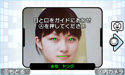

さっそく誰かの顔を撮影してみましょう。画面の指示にしたがって、目と口が上画面のガイドにピッタリ合うように、3DS本体を動かして撮影します。すると性別やタイプなどの顔診断が行われ、顔が敵キャラクターとして画面内で動き始めます。
自分自身や、よく知っている誰かの顔が攻撃してくるだけでも面白いですが、顔の表情も自動でいろんな動きを見せてくれます。こうした動きも、元はすべて一枚の顔写真からできているのです。
ガイドに口の方から合わせると、キャラクターの動きがキレイになることが多いようです。また、実際の人物だけでなく、イラストや写真などからも顔を認識してキャラクター化することもできます。自分で描いた絵をキャラクター化しても面白いかもしれません。